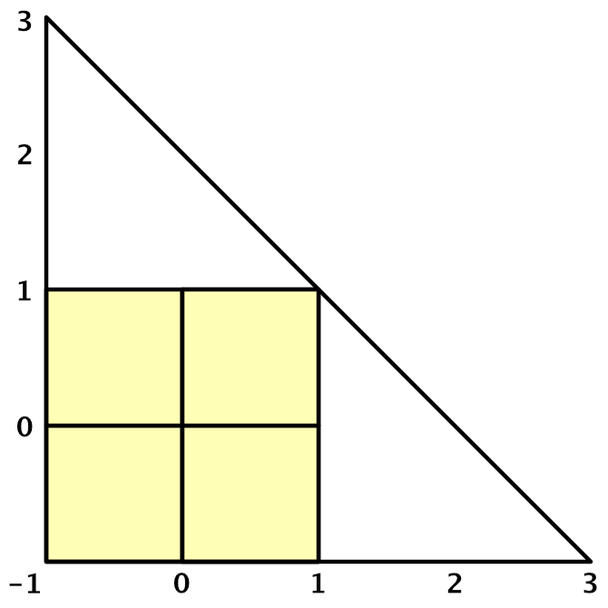

UnityPostprocess
Table of Contents
UnityPostprocess note.
<!– more –>
UnityPostprocessStack Version 2
使用 PPS
- 加载 profile,赋值给 PostProcessVolume。
- 修改 Effect 参数, 不写入到后处理配置文件中。
using UnityEngine; using UnityEngine.Rendering.PostProcessing; public class ChangeGrayscale : MonoBehaviour { public PostProcessProfile profile; PostProcessProfile curProfile; [Range(0,1)] public float blendV = 0.5f; float preBlendV = 0; private void Start() { var ppl = GetComponent<PostProcessLayer>(); var ppv = GetComponent<PostProcessVolume>(); // 设置profile时使用sharedProfile 设置之前需要先清除之前设置的profile ppv.profile = null; #if UNITY_EDITOR // 避免Editor下运行时对profile的修改被保存 ppv.sharedProfile = UnityEngine.Object.Instantiate<PostProcessProfile>(profile); #else ppv.sharedProfile = profile; #endif // 后续操作都通过 curProfile 进行，保证使用sharedProfile curProfile = ppv.sharedProfile; } void Update() { if(preBlendV != blendV) { Grayscale grayscale; if(curProfile.TryGetSettings<Grayscale>(out grayscale)) { //grayscale.blend.Override(blendV); grayscale.blend.value = blendV; } preBlendV = blendV; } } }
Writing Custom Effects
CSharp 实现
- PostProcess 性质的第二个参数指定了效果生效的时机
- BeforeTransparent: 效果在不透明物体绘制结束，透明物体开始绘制之前被应用。
- BeforeStack: 效果在内置后处理之前被应用。 内置的后处理有 anti-aliasing, depth-of-field, tonemapping etc
- AfterStack: 效果在内置后处理之后在 FXAA 和 final-pass 之前被应用。
- BeforeTransparent: 效果在不透明物体绘制结束，透明物体开始绘制之前被应用。
- PostProcess 性质的第四个参数是可选的，用于指定该效果在 SceneView 中是否生效
- 为了支持 PostProcessEffectSettings 中的参数混合和覆盖，需要对参数进行包装。例如使用 FloatParameter 类型，而不是直接使用 float 类型。
using System; using System.Collections; using System.Collections.Generic; using UnityEngine; using UnityEngine.Rendering.PostProcessing; [Serializable] [PostProcess(typeof(GDepthOfFieldRenderer), PostProcessEvent.BeforeStack, "Custom/GDepthOfField")] public class GDepthOfField : PostProcessEffectSettings { } public class GDepthOfFieldRenderer : PostProcessEffectRenderer<GDepthOfField> { Shader shader; public override void Init() { shader = Shader.Find("Hidden/Custom/GDepthOfField"); } public override void Render(PostProcessRenderContext context) { var cmd = context.command; if (shader == null) return; var sheet = context.propertySheets.Get(shader); if (sheet == null) return; cmd.BeginSample("GDepthOfField"); // ...... cmd.BlitFullscreenTriangle(context.source, context.destination, sheet, 0); cmd.EndSample("GDepthOfField End"); } }
Shader 实现
Shader "Hidden/Custom/GDepthOfField" { Properties { //_MainTex ("Texture", 2D) = "white" {} } SubShader { // No culling or depth Cull Off ZWrite Off ZTest Always CGINCLUDE #include "UnityCG.cginc" struct appdata { float4 vertex : POSITION; float2 uv : TEXCOORD0; }; struct v2f { float2 uv : TEXCOORD0; float4 vertex : SV_POSITION; }; v2f vert (appdata v) { v2f o; o.vertex = float4(v.vertex.xy, 0, 1); o.uv = (v.vertex + 1) * 0.5; #if UNITY_UV_STARTS_AT_TOP o.uv= o.uv * float2(1.0, -1.0) + float2(0.0, 1.0); #endif return o; } sampler2D _MainTex; float4 _MainTex_TexelSize; half3 Sample(float2 uv) { return tex2D(_MainTex, uv).rgb; } ENDCG Pass // 0 { CGPROGRAM #pragma vertex vert #pragma fragment frag fixed4 frag (v2f i) : SV_Target { return half4(Sample(i.uv, 1), 1); } ENDCG } } }
Source Code
Q&A
RuntimeUtilities.fullscreenTriangle 为什么只有一个三角形，且三角形顶点坐标中会有 3?
Postprocess 没有通过绘制两个三角形来实现绘制整个屏幕,而是通过绘制一个超出屏幕的大三角形来覆盖整个屏幕，这样不仅减少了 DrawCall，而且减少了 Overdraw(绘制两个三角形时，屏幕对角线占用的像素需要绘制两次，从而产生了 Overdraw).
下图为绘制 fullscreenTriangle 的图示，其中淡黄色区域为实际绘制的部分，其他部分都会被剔除。

public static Mesh fullscreenTriangle { get { if (s_FullscreenTriangle != null) return s_FullscreenTriangle; s_FullscreenTriangle = new Mesh { name = "Fullscreen Triangle" }; // Because we have to support older platforms (GLES2/3, DX9 etc) we can't do all of // this directly in the vertex shader using vertex ids :( s_FullscreenTriangle.SetVertices(new List<Vector3> { new Vector3(-1f, -1f, 0f), new Vector3(-1f, 3f, 0f), new Vector3( 3f, -1f, 0f) }); s_FullscreenTriangle.SetIndices(new [] { 0, 1, 2 }, MeshTopology.Triangles, 0, false); s_FullscreenTriangle.UploadMeshData(false); return s_FullscreenTriangle; } }
// Vertex manipulation float2 TransformTriangleVertexToUV(float2 vertex) { float2 uv = (vertex + 1.0) * 0.5; return uv; } VaryingsDefault VertDefault(AttributesDefault v) { VaryingsDefault o; // 顶点坐标不经过MVP变换，顶点已经在ClipSpace坐标系中（[-1,1]范围外的顶点在后续裁剪操作中都会被剔除）。 o.vertex = float4(v.vertex.xy, 0.0, 1.0); // uv 直接通过顶点坐标求得 o.texcoord = TransformTriangleVertexToUV(v.vertex.xy); #if UNITY_UV_STARTS_AT_TOP o.texcoord = o.texcoord * float2(1.0, -1.0) + float2(0.0, 1.0); #endif o.texcoordStereo = TransformStereoScreenSpaceTex(o.texcoord, 1.0); return o; }
PPSV2 整个流程做了哪些事情？
初始化
PostProcessLayer.OnEnable() 中会调用 PostProcessLayer.Init() PostProcessLayer.InitBundles()
运行
PostProcessLayer.OnPreRender() 中会调用 PostProcessLayer.BuildCommandBuffers(); 只有在 VR 模式下，OnPreRender 中的 BuildCommandBuffers();才会被调用。
PostProcessLayer.OnPreCull() 中会调用 PostProcessLayer.BuildCommandBuffers();
PPSV2 是如何控制效果生效的时机的？
public enum PostProcessEvent { /// <summary> /// Effects at this injection points will execute before transparent objects are rendered. /// </summary> BeforeTransparent = 0, /// <summary> /// Effects at this injection points will execute after temporal anti-aliasing and before /// builtin effects are rendered. /// </summary> BeforeStack = 1, /// <summary> /// Effects at this injection points will execute after builtin effects have been rendered /// and before the final pass that does FXAA and applies dithering. /// </summary> AfterStack = 2, }
PPSV2 中通过 PostProcessEvent 枚举来定义后处理效果生效的时机。
ERROR: FrameDebug 死循环，看不到 DrawCall
cmd.BeginSample("GBloomPyramid"); // ...... // 缺少EndSample cmd.EndSample("GBloomPyramid-END");
ERROR: _MainTex 属性没有传递到自己的 GBloom.shader 中
// RuntimeUtilieties.cs void BlitFullscreenTriangle(this CommandBuffer cmd, RenderTargetIdentifier source, RenderTargetIdentifier destination, PropertySheet propertySheet, int pass, RenderBufferLoadAction loadAction, Rect? viewport = null) { // 通过GlobalTexture来设置属性的，所以当Property列表中包含 _MainTex属性会导致GlobalTexture设置失效 cmd.SetGlobalTexture(ShaderIDs.MainTex, source); // ...... } Properties { // //_MainTex ("Texture", 2D) = "white" {} }
URP Postprocess
使用 URP PP
为摄像机指定 VolumeTrigger 和 VolumeLayerMask
var uaCamData = camera.GetComponent<UniversalAdditionalCameraData>(); uaCamData.volumeTrigger = someGObj.transform; uaCamData.volumeLayerMask = 1<<30;
Writing Custom Effects
Source Code
代码结构
下面主要列出 Runtime 下目录结构
com.unity.render-pipelines.universal@10.5.0
├─Runtime
│ ├─2D
│ │ ├─Passes
│ │ │ └─Utility
│ │ └─Shadows
│ ├─Data
│ ├─External
│ │ └─LibTessDotNet
│ ├─Materials
│ │ ├─ArnoldStandardSurface
│ │ └─PhysicalMaterial3DsMax
│ ├─Overrides / 内置后处理
│ ├─Passes / 内置 Pass
│ ├─RendererFeatures // 内置 RendererFeatures
│ └─XR